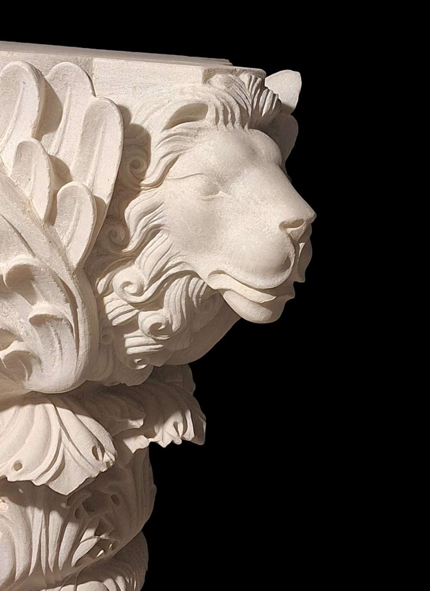
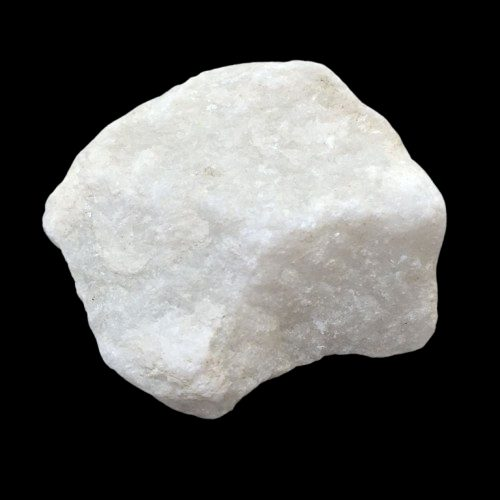
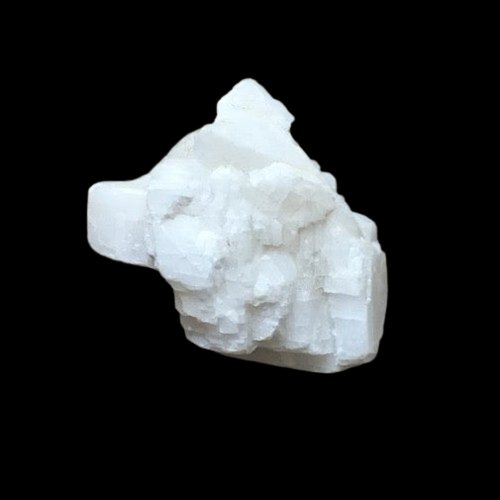
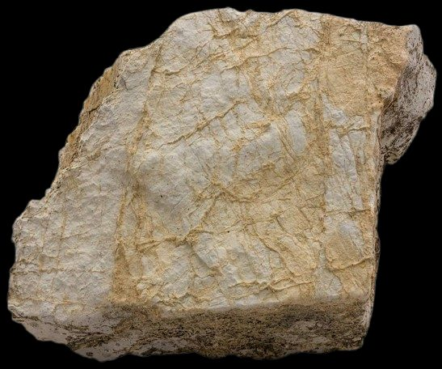
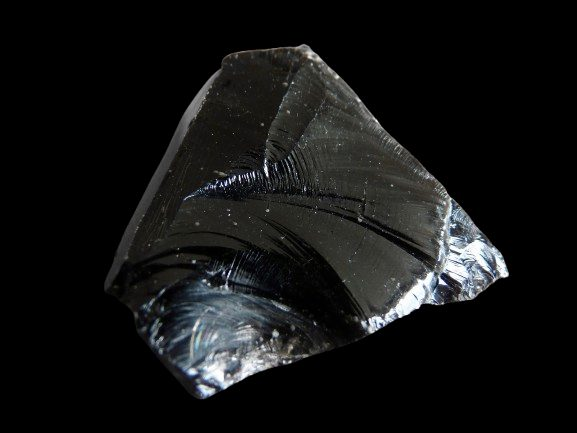
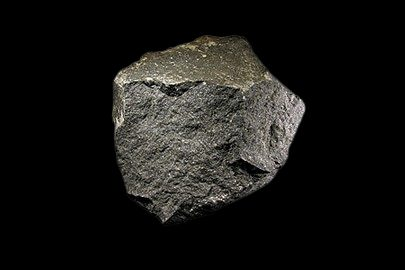
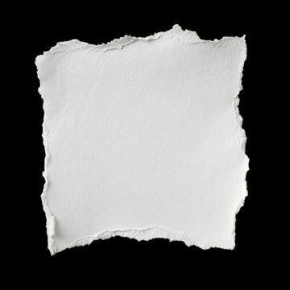

Sculptor & stone carver — Athens, Greece
Form.Space.Silence.
Irakli Athoneli carves marble, dolomite, granite and obsidian — from monumental commissions and architectural stonework to intimate portraits and works on paper.
Latest works · 2025
New in Pentelic marble
Three new pieces carved from the marble of Mount Penteli, near Athens — the stone of the Parthenon.
Irakli Athoneli, on the Trojan horse
“The fortress never falls from the outside.”See Troja Warhorse
The collection
Selected works
Sculpture, capitals and reliefs, portraits and works on paper — 21 works in the catalogue.
All worksMaterials
Six materials, one patience
The work is about the weight of the material, and the patience it takes for a form to emerge from the block.

Pentelic marble
Quarried on Mount Penteli, near Athens — the marble of the Parthenon.

White dolomite
Dense and luminous. Carved for Horse Head.

Dolomite
Warm and veined. Used for Warrior and Freedom.

Obsidian
Volcanic glass, brittle and unforgiving. Black Bull.

Granite & stone
For outdoor and monumental work, such as Freedom and Family.

Paper
Pastel drawings and studies, made in Athens.
Recognition
Awards & symposiums
Works held in private collections in the United States, Canada, Romania, Russia, Greece and Georgia.
About the artist- 2014First Prize, Best Stone SculptureGallery Muza, Tbilisi — for Warrior
- 2017Symposium AwardRustavi International Sculpture Symposium, Georgia — for Family
- 2014International Art FestivalKutaisi, Georgia — Freedom
- —Second Prize, Open CompetitionAkhaltsikhe — “Heroes Who Sacrificed Themselves for the Homeland”